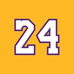

土拨鼠
“土拨鼠”是朋友们给我起的外号，所以把这个称呼当作了我的组名。而使用这个图片作为logo则是因为我是湖人的球迷，24是蜗壳的号码。
作为一名研一的学生，我对前端充满了兴趣，也将其作为我未来的发展方向。不过现阶段也仅仅掌握了一些基础知识。因为我的本科并不是计算机学科，所以在基础上并不是那么牢固，但是我相信能够通过自己的努力，使自己成为一只合格的代码鼠。希望在这里和大家一起进步，退出什么的是不存在的，好了，不多BB，溜了溜了溜了。